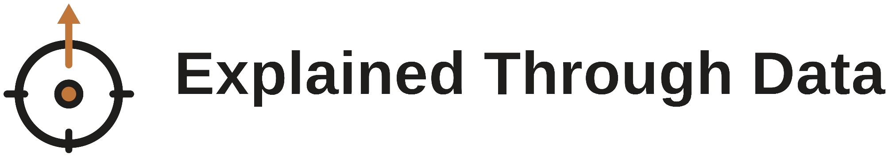

A live case study, June 7 to September 4, 2026.
Real days, honest numbers, one system built to hold both.
Ninety days of documenting real life without a pass or fail attached. Every morning starts with the same short set of measurements. Every evening closes with a written reflection. Six pillars run underneath: Body, Career, Relational and Spiritual, Community, and the quiet fifth of Documentation itself.
The frame is Lean Six Sigma, DMAIC, and Statistical Process Control, applied to a person instead of a factory. That is not a metaphor. Every measurement has an operational definition, every finding has a Special Cause or Common Cause verdict, and every ruling is dated and defensible.
Every outcome downstream lives or dies on two inputs. The habits I complete and the reachouts I send. These are the levers, and they come first.
These are lagging indicators. They tell the truth about what the inputs are doing, sometimes on delay, always honestly.
Reach me if you'd like to talk about what this looks like inside client experience, account management, or a role where measured care matters.
Get in touch